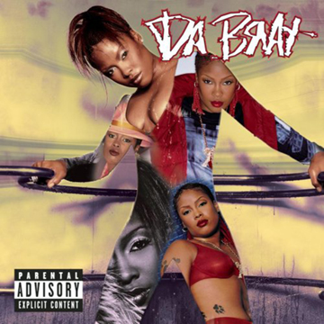
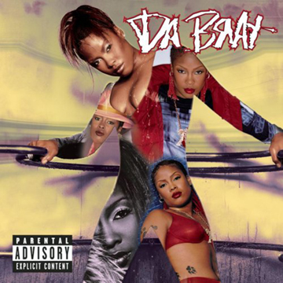

services
- art direction
- brand design
- pitch presentations
- design consultation
- fluent in adobe css
- digital design
- logo design
- digital and print design
- banner design
- standard retouching
bio
Born a Brooklynite with southern roots, Alice Butts always loved art. From Kindergarten "drawings" for fellow classmates to studying advertising design at High School of Art & Design, art is the constant factor of her life.
Since graduating from the School of Visual Arts with BFA, Alice has been an art director and designer producing visual design elements for a multitude of recording artists as well as advertising clients for Arcade Creative Group.
Combining imaging and typography to present a message.